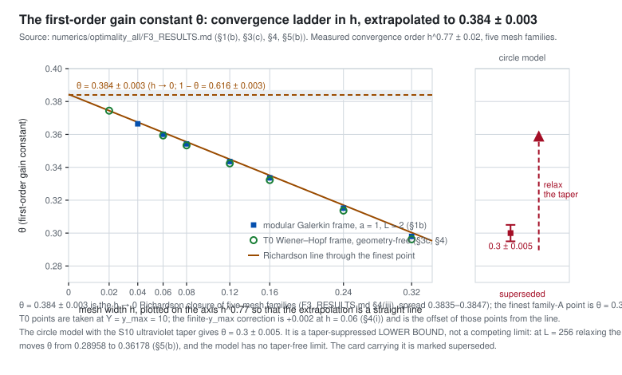

Module 5 — Why two documents disagreed about θ
One document measured θ = 0.300 ± 0.005 in a spectral model on the circle; another measured 0.384 ± 0.003 in a modular Galerkin frame. They are not two limits of the same quantity. The circle model carries an ultraviolet taper, the taper damps exactly the modes that carry the difference, and its number is a lower bound rather than an estimate. This page lets you move the taper — but with two separate controls, because the sweep that first showed the effect moved two things at once.
The circle model puts a smoothstep taper on the spectral derivative, over a window uv = (u, v) in units of L — the Nyquist frequency and the periodic grid's second Fermi point both sit at |ν|/L = 0.5. Relaxing the taper towards that edge raises θ. But the five-window sweep that first showed this is not a one-parameter scan: its first three windows share a transition width of 0.12 while the last two are 0.07 and 0.039 wide. Its two largest values, in the last two rows of the table below, are artefacts of the sharp transition, not measurements of taper strength — so a single slider through that sweep would teach the wrong lesson. The two knobs are separated below.
Where this comes from: claim page · rigor/referee_taper_card.md (REF-P0-TAPER, 2026-09-21) · numerics/optimality_all/F3_RESULTS.md §5 · f3_circ_taper2.out
The same mechanism, stated as a method rule. A tapered spectral discretisation of the Möbius flow does not preserve the Hardy space in the ultraviolet, and the resulting defect in modes with exponentially large SLD weights corrupts exact fidelities even while the visible second-order functional is resolved to one per cent. Exact fidelities may be compared only in Hardy-preserving discretisations; windowed fidelities are lower bounds, and their ratios prove nothing.
Where this comes from: the claim list (no page of its own) · rigor/optimality_all_channels.tex §5.2 · exact_fidelity_rotated.py

Exhibit: the sweep that caused the trouble
Five taper windows, only three of them width-matched, and two untapered runs, quoted as if they were a scan in taper strength. Two things change down the row, and the transition width is printed beside each window so you can see it happen. Nothing below this table uses the sweep as a scan.
Control 1 — relax the window, at a fixed transition width 0.12
One knob moves: where the taper sits. The transition width is held at 0.12 for every point, and the same three windows were run at L = 256, 512, 768. θ rises monotonically at every L. The control stops at an upper edge of 0.47: the next window at this width is (0.38, 0.50), which sits on the grid's second Fermi point, and its θ is not a taper-strength datum. The panel beneath shows |u|², the norm of the visible defect, so you can see the health of the model beside every value of θ.
Control 2 — sharpen the transition, at a fixed upper edge
This control shows |u|², not θ. The sharpening effect is established as a complete scan only in |u|²; in θ it exists at scattered windows and no scan at a fixed upper edge has been run. Rather than interpolate a curve through three points that were never a scan, the page shows the quantity it has. Narrowing the transition at a fixed edge is a Gibbs effect: the norm blows up as the transition narrows — the readout gives the exact factor at each edge — while a wider transition reaching the same band edge leaves it healthy. That is why the two largest numbers of the original sweep are not evidence about taper strength.
Without the taper: stable, and answering a different question
Dropping the taper does not give a taper-free limit. The periodic grid's second Fermi point at |ν|/L = 0.5 doubles the Fermi sea, and |u|² with it. The untapered model is then perfectly stable in L — four digits of |u|² and a smoothly rising θ — it is simply solving a different problem, one with twice the Fermi sea. So the taper is necessary, and it biases θ downwards.
What settles it: the same mesh, without the taper
Run the modular Galerkin functional — exact vacuum symbol, exact continuum defect kernel, no taper, no cap — on the circle model's own mesh, at the same |D| and the same geometry. It reproduces the Galerkin values, not the circle ones. So the mesh is not responsible. Meanwhile the tapered number rises linearly in log L, which is why a Richardson extrapolation in 1/L was the wrong variable: a law linear in log L is unbounded and cannot converge to anything.
What stands, and what does not
Everything drawn from θ > 0 stands and is strengthened: condition (S) fails, the compression is not the second-order minimiser, and E(2) ≤ (1−θ) f₂z² with 1−θ read from the reconciled θ rather than from the tapered one. What does not stand is the spectral document's own assertion that θ is ultraviolet-taper independent; and its non-perturbative figure is a consistency check of the tapered model, not a measurement of 1−θ.
Claims this module carries
| claim | status |
|---|---|
| the circle model's taper suppresses θ | numerical |
| finite spectral models do not resolve exact fidelities | verified |
| θ = 0.384 ± 0.003, the reconciled value | numerical |